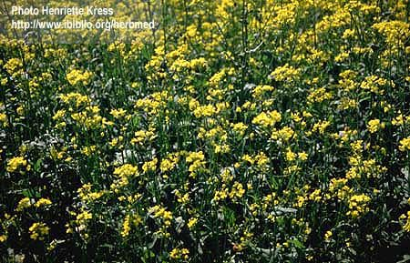

|
ECONOMICALLY
IMPORTANT PLANTS OF INDIA |
| Under-utilized Food and Fodder species and their wild relatives | Contributed by Ms.M.L Annapurna And Dr. Dhanapal, UAS, Bangalore |
Brassica rapa L.

DIAGNOSTIC
FEATURES
It is a biennial, producing in the first
year, a swollen, fleshy tap-root(conical to flat), and a rosette of hairy leaves:
and in the next year, a stem 1-3' high, bearing leaves and flowers. But in cultivation
it is grown as a cold season crop in the plains of the Punjab, U.P etc, sometimes
grown on the hills.
Major Pests and Diseases: Alternaria
leaf spot also affects the crop and when the foliage is infected, the roots also
get infection and exhibit symptoms. The spots are nearly circular, often zonate
and show various shades of brown or cometimes black-white mould or dark spores
may cover the spot. Phyllody is also common and malformation of
flowering shoots normally occurs affecting the normal fruit set. Turnip yellow
mosaic virus also affects the crop and the disease is transmitted through flea
beetle. The spread of the disease can be checked by controlling the
vector.Cabbage may serve as an alternate host for the virus.
Parts used:
Harvesting Practices
Breeding System :
Phenology :
Flowering occurs from February - March and in some places flowering occurs from November - April.
Seed Biology :
Seed Germination:
Cultivation :
It is grown as a cold season crop. Seeds from acclimatized
varieties like Turnip Red, and Turnip White are sown during July to August, and
those of imported varieties are sown from September onwards. All though turnip
is grown o n all kinds of soil, it thrives best on deep rich loam, and requires
only limited manuring(8-10 cart loads of farm yard manure per acre). Seeds are
broadcast and seedlings are thinned and spaced 5-6" apart Turnip also requires
frequent irrigation, and the crop is harvested in 45-70 days. In hot weather, or
when growth is slow for want of water, etc, the turnip quickly becomes woody and
bitter.
Pests:Aphids,mustard saw fly, flea betle and gall weevil affect the turnip and
cause damage.Application of lindane 3% granules before sowing,spraying of
Carbaryl at 0.2 % is recommended for control of these pests.
Diseases:Powdery mildew,downy mildew, soft rot, dry rot and brown heart are
the major diseases affecting the crop.Application of borax at 20-25 kg/ha and
spraying indofil M 45 at 0.2 % will be effective in controlling these diseases.
Economic
Potential and Uses
Tap root and leaves.
Timely harvest is essential for getting quality roots in turnip. Harvesting
roots of 5.0-7.5 cm dia would be ideal and larger roots are often coarse in
texture and bitter in taste. A light irrigation is necessary just harvesting
to facilitate lifting. The entire plants are uprooted, roots separated,
cleaned and tops are cut. The graded roots are sent for marketing.
Produce and Products
Turnip root contains: Moisture, 91.1;
Protein 0.5; fat, 0.2; Carbohydrate, 7.6; mineral matter, 0.6; calcium, 0.03;
phosphorous, 0.04%; iron,0.4mg.; vitamin A, trace; vitamin B1, 40 I.U.; vitamin
C, 43 mg./100 g.
Processing Techniques
Other Uses
Economical
Potential to the country
Export Potential
Miscellaneous
Information
Literature